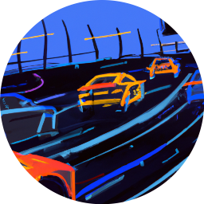

Course de Voitures Autonomes de Paris-Saclay
L'événement accueille depuis 2020 des équipes d'étudiants (IUT, écoles d'ingénieurs, universités) pour une course de voitures 1/10ème autonomes, dans un esprit convivial et de collaboration. La perspective de la victoire finale n'empêche pas les équipes de s'entraider pendant l'année dans l'optique de progrès communs. N'hésitez pas à rejoindre la compétition.

Date de l'édition 2025
L'édition 2025 aura lieu le samedi 5 avril à l'ENS Paris Saclay.
Editions précédentes
Des résumés et des vidéos des éditions précédentes sont disponibles sur le site de Culture Sciences de l'Ingénieur :

Git
Le dépôt Git permet de trouver le réglement, quelques photos et vidéos ainsi que l'ensemble des ressources pour participer à la course de voitures autonomes de Paris Saclay et d'y partager les siennes.